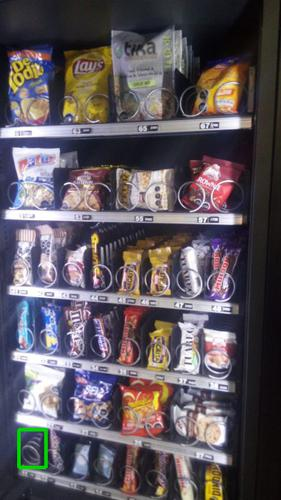

Antes de AbastecerNo se detectaron espirales vacios.

id 346.361
|
Luego de AbastecerSe detectó 1 espiral vacio.

id 346.362 |
|
| Fecha |
Reporte |
Vacios ANT |
% Abast |
% Quiebre |
Sum QTY |
Rotación Diaria |
Abast hace (días) |
| 05-07-2021 |
Viendo |
0 |
4.6 |
0.0 |
23 |
7 |
3 |
| 02-07-2021 |
Ver |
4 |
17.4 |
10.0 |
87 |
43 |
2 |
| 30-06-2021 |
Ver |
1 |
1.8 |
2.5 |
9 |
1 |
5 |
| 25-06-2021 |
Ver |
0 |
2.6 |
0 |
13 |
6 |
2 |
| 23-06-2021 |
Ver |
5 |
11.6 |
12.5 |
58 |
- |
- |
|
|
|
Se abasteció la máquina con:
Total de 23 unidades de 5 productos.
| Qty. |
Producto |
SubFamilia |
Familia |
| 5 |
Mini Selz 45 Gr |
Galletas |
Snack |
| 5 |
Galleta Conquista 45 Gr |
Galletas |
Snack |
| 5 |
Galleta Din Don 24Ux46Gr |
Galletas |
Snack |
| 3 |
Papas Fritas Lays Evercri |
Salados |
Snack |
| 5 |
De Todito I Evercrisp 50G |
Snack |
Snack |
| Productos más abastecidos en últimas 6 semanas:
| Nro. Abast |
Qty/Abast |
Producto |
Abast hace (días) |
Fecha |
| 11 |
4 |
Papas Fritas Lays Evercri |
0 |
05-07-2021 |
| 7 |
4 |
Mini Selz 45 Gr |
0 |
05-07-2021 |
| 6 |
7 |
Tuareg Coco Indiv. 24X48 |
3 |
02-07-2021 |
| 6 |
6 |
Papas Fritas Tika Chiloe |
3 |
02-07-2021 |
| 6 |
5 |
De Todito I Evercrisp 50G |
0 |
05-07-2021 |
| Productos menos abastecidos en últimas 6 semanas:
| Nro. Abast |
Qty/Abast |
Producto |
Abast hace (días) |
Fecha |
| 1 |
4 |
Galleta Greta 30G 4U |
35 |
31-05-2021 |
| 1 |
5 |
Papas Fritas Tika Patagon |
28 |
07-06-2021 |
| 1 |
8 |
Mizos Chocolate Naranja |
28 |
07-06-2021 |
| 1 |
8 |
Galleta Arroz Maiz Pera S |
12 |
23-06-2021 |
| 1 |
10 |
Mani Crocante Pettiz 50Gr |
12 |
23-06-2021 |
|
|